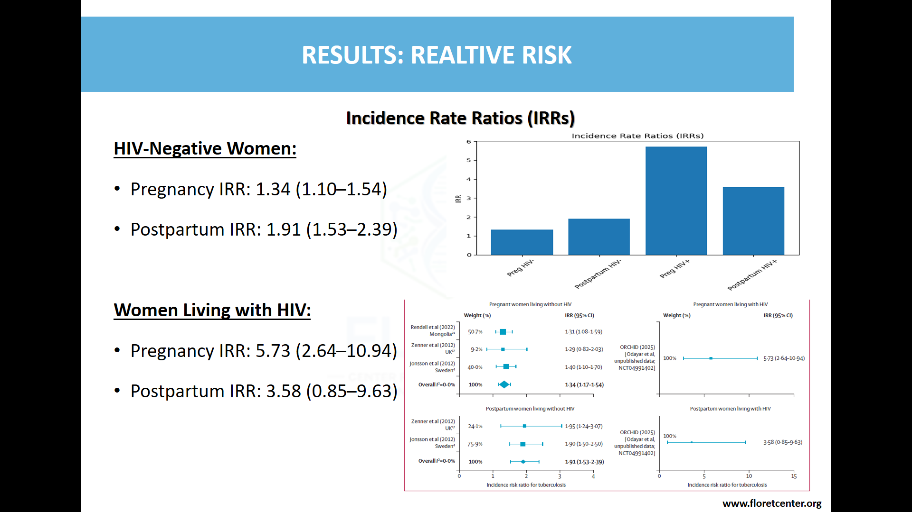
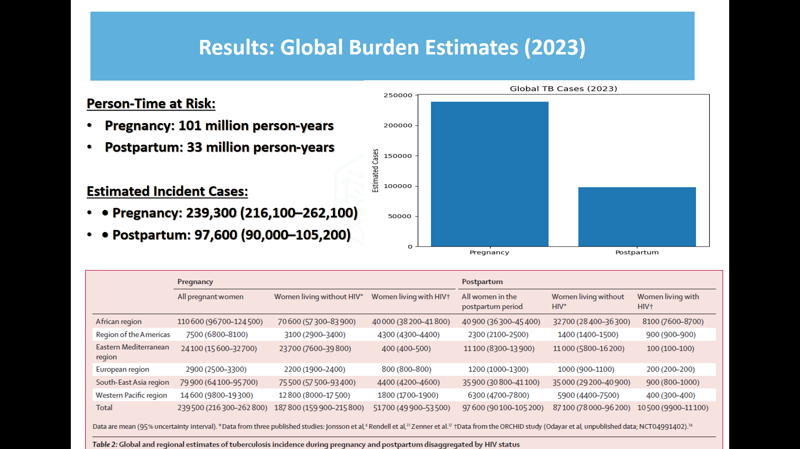
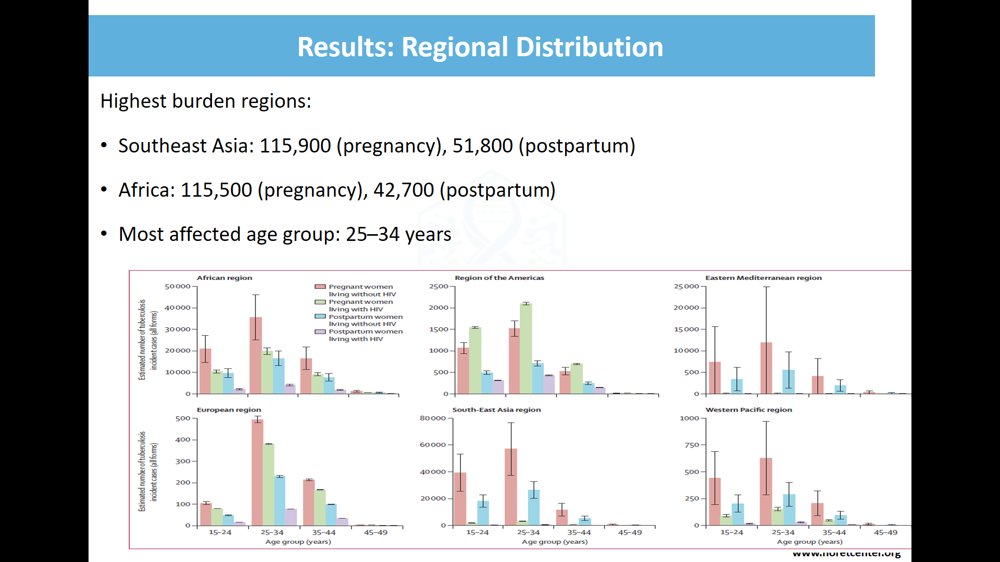
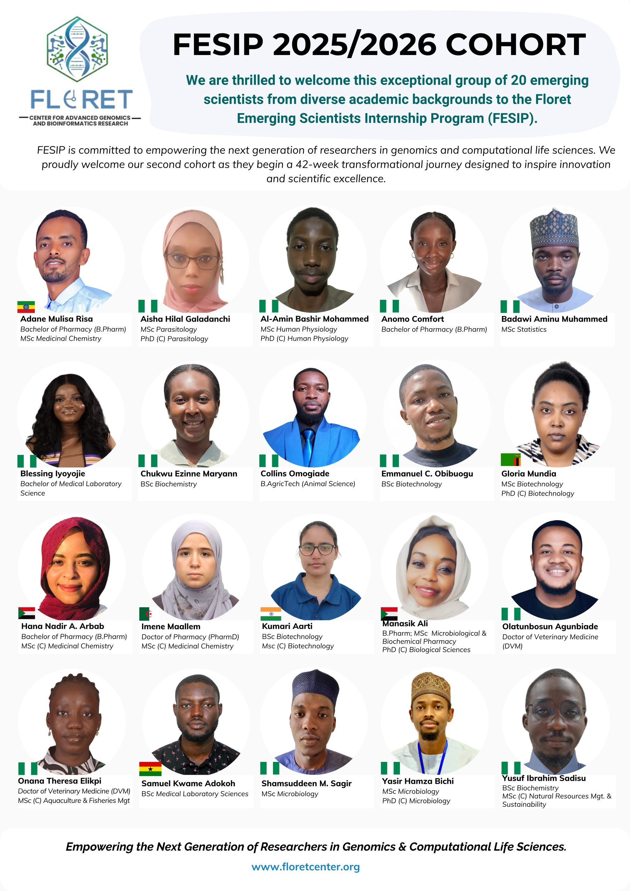

Amin Muhammed Badawi
Research Review Facilitator
Delivered in collaboration with Floret Centre for Advanced Genomics and Bioinformatics as part of the FESIP Journal Club scientific webinar series.
Back To ProgramsAs part of the FESIP Journal Club scientific webinar series, I delivered a structured research review presentation examining global estimates of tuberculosis (TB) incidence during pregnancy and the postpartum period, with women living with HIV included as a comparative risk group.
The session was designed for an audience of researchers, epidemiologists, and genomic scientists, with emphasis on methodological critique, modelling assumptions, and implications for maternal infectious disease surveillance.
The review critically analysed:
Special attention was given to how HIV status modifies TB risk and the implications for integrated maternal health policy.
The presentation went beyond summary to conduct a structured methodological critique, including:
Comparative interpretation of TB incidence among pregnant and postpartum women living with HIV highlighted epidemiological interactions and co-morbidity burden amplification.
Key analytical themes discussed included:
The session linked findings to broader infectious disease modelling and maternal health surveillance strategies.
The webinar fostered technical dialogue across disciplines, integrating epidemiology, genomics, and data modelling perspectives.
Outputs included:
The presentation reinforced the importance of rigorous modelling, transparent assumptions, and context-sensitive interpretation in global health estimation studies.
This engagement demonstrated:
The session contributed to interdisciplinary learning and strengthened collaborative engagement between data scientists and genomic research professionals.




Research Review Facilitator

Floret Centre Senior Research fellow and Program director
Journal Club Host

memebers from related fields of study